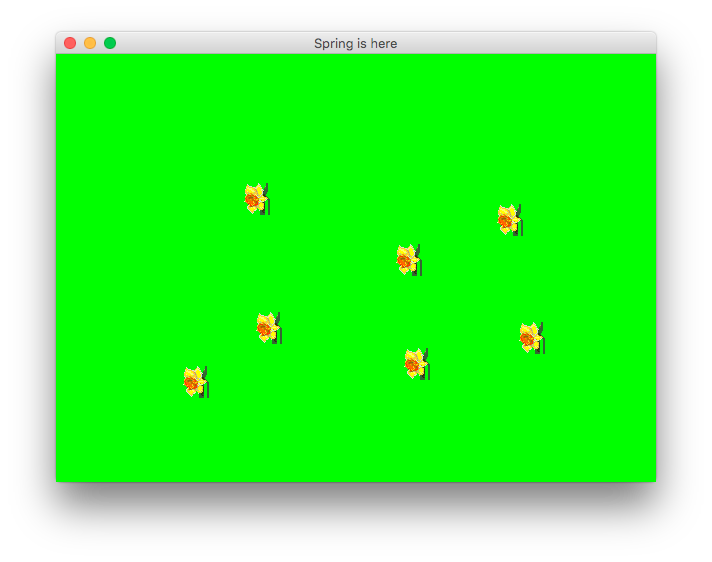

Lab 13: Flowers
Objectives
- Use an ArrayList to manage a group of graphical elements
- Load image files and display images using the Graphics object
Program Summary
In this lab you will be planting flowers on the screen. Your application should display a green panel representing your field. Each time the use clicks on the screen, a daffodil should be added to the field. The following is a snapshot of the application:

Task 1: Setup
- Download the starter code, which includes a Frame, a FlowerPanel and a Flower class. It also comes with a flower image file.
- The Flower class encapsulates the information needed to display one flower on the panel. Implement the //TODOs in this file.
- When adding an image to your Eclipse project, make sure you place it inside of the project folder and not in the src folder.
Task 2: Display a Flower
- Give the FlowerPanel an instance variable for a Flower and initialize it in the constructor. Put the image anywhere on the screen.
- Override the paintComponent method so that the image shows up when your run the program.
- When the user clicks on the panel, it should move the image to the mouse cursor.
Task 3: Display More Flowers
- Replace your Flower variable with an ArrayList of Flowers.
- Change the paintComponent method to loop through the array list and draw each Flower in the panel.
- When the user clicks the mouse, the program should instantiate a new Flower at the cursor position and add it to the array list, then redraw the panel so that the new flower is displayed along with all the others. Once this is complete, you should be able to create as many flowers as you want by clicking around on the screen.
Task 4: Display Different Flowers
- Find two more flower images online. Ideally these will be around the same size as the original, but you can always scale them if they’re too big.
- Modify your program so that the user can create flowers with any of the three images. You can determine which image to use randomly, let the user change the image with the keyboard, cycle through the images, or with some other method.
Advice
To display one image on the screen, you need to call the drawImage()
method of the Graphics parameter:
g.drawImage(image, xLoc, yLoc, null); // leave observer argument null
To load one of your images, use the ImageIcon class. You should only do this once for each image in your program.
ImageIcon icon = new ImageIcon("image.png");
image = icon.getImage();
Review & Submission
When you have completed the lab, please upload all Java source code and any other documents (such as diagrams or answers to questions) to Blackboard in a single submission. Make sure you have completed each task before submitting the assignment.
I will review all lab assignments after the deadline. You should usually receive feedback within a week of the deadline.
Your submission must include:
Flower.javaFlowerApp.javaFlowerPanel.java- All images used in your program